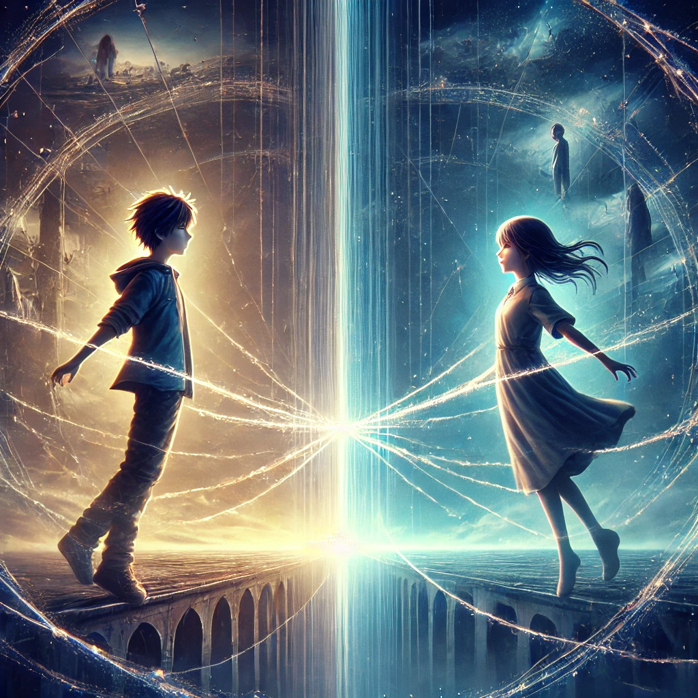

어느 날, 내 죽음에 네가 들어왔다
목차
작가
세이카 료겐
출판일
2022.05.09
감상평에 대한 AI그림
죽음으로 얽힌 소년과 소녀 사이의 강한 인연이 시간에 따라 커져가는 느낌을 주어 인상 깊었던 책이다. 마지막에 펼쳐지는 극적인 전개가 흥미를 최고조로 끌어올렸다.

감상평에 대한 AI평가
이 감상평은 책의 핵심적인 감정을 잘 전달하고 있어.
✨ 죽음으로 얽힌 소년과 소녀의 인연이 시간이 흐르며 더욱 깊어지는 점을 강조한 부분이 흥미롭고, 마지막의 극적인 전개가 흥미를 최고조로 끌어올린다는 표현도 감상자의 감정을 잘 드러내고 있어.
✨ 조금 더 보완하면 좋을 부분은 구체적인 감정 변화나 인상 깊었던 장면을 추가하는 거야. 예를 들어, 소년과 소녀가 어떤 계기로 서로의 인연을 깨닫게 되었는지, 극적인 전개가 왜 강렬하게 다가왔는지를 설명하면 감상평이 더 생생해질 것 같아.
✨ 또한, ‘시간에 따라 인연이 커져간다’는 부분이 어떤 방식으로 표현되었는지(예: 회상 장면, 운명의 반복 등) 조금만 더 풀어주면 독자가 책의 분위기를 더 잘 느낄 수 있을 거야. 전반적으로 감정을 잘 담고 있는 감상평이지만, 약간의 구체적인 설명이 추가되면 더 인상적인 글이 될 것 같아!